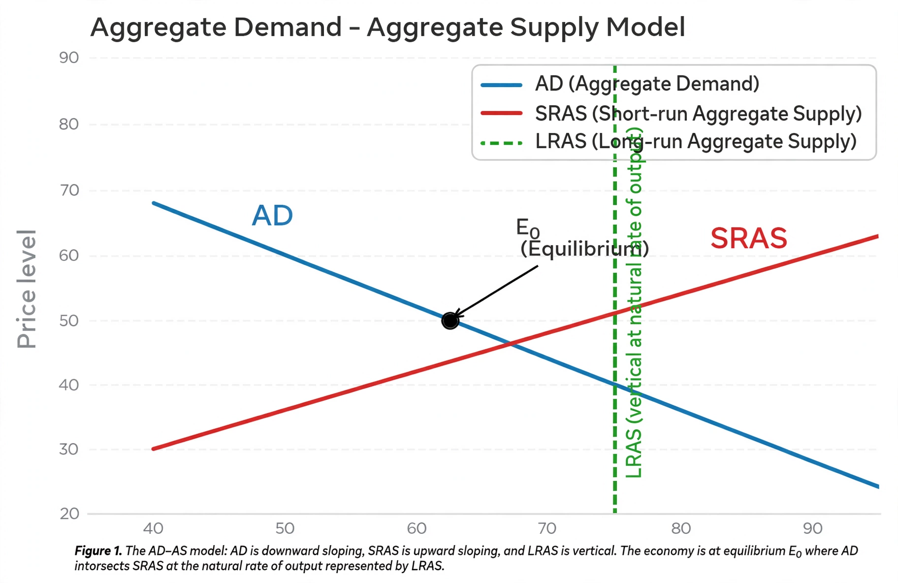

From Wikipedia, the free encyclopedia
In economics, aggregate demand (AD) or domestic final demand (DFD) is the total demand for final goods and services in an economy at a given time. It is often called effective demand, though at other times this term is distinguished. This is the demand for the gross domestic product of a country. It specifies the amount of goods and services that will be purchased at all possible price levels.
The aggregate demand curve is the sum of consumption, investment, government spending and net exports:
AD = C + I + G + (X − M)

The AD curve slopes downward in the price level–real output plane for three classic reasons: the Pigou (real balance) effect — a lower price level raises the real value of money holdings, stimulating consumption; the Keynes (interest rate) effect — a lower price level reduces the demand for money and interest rates, stimulating investment; and the Mundell–Fleming (exchange rate) effect — lower domestic interest rates depreciate the currency, raising net exports. The curve shifts when any component changes for reasons other than the price level, for example through changes in the money supply, taxes, or consumer confidence. Automatic stabilizers moderate such shifts over the business cycle.
In the AD–AS model, macroeconomic equilibrium occurs where aggregate demand equals aggregate supply. In the short run, supply is often drawn upward-sloping (or horizontal in the simplest Keynesian case), so demand shocks move output and employment; in the long run, supply is vertical at potential output, so sustained demand growth mainly raises the price level — contributing to inflation or, when demand contracts sharply, deflation.
Keynesian economists emphasise demand management through fiscal and monetary policy. Monetarist and new classical critics argued that in the long run output is supply-determined and demand stimulus mainly produces inflation, a line of thinking developed further in New Keynesian economics.
Categories: Macroeconomics · Demand